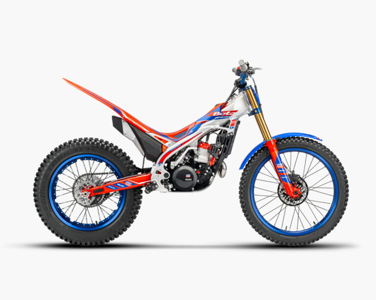
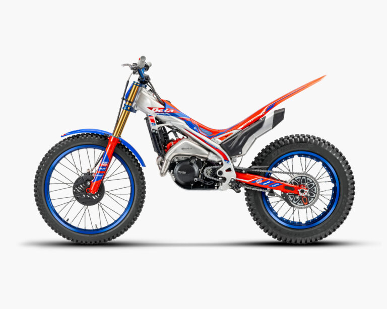

La scuola del Trial. Leggera e intuitiva, è la moto ideale per i giovani piloti che vogliono imparare la tecnica corretta. Il motore 125 2T è brillante e facile da gestire in ogni zona.

L'equilibrio perfetto. La 250 offre una spinta più corposa rispetto alla piccola 125, mantenendo però una facilità di guida incredibile. Ottima per l'amatore che vuole salire di livello

La massima espressione del Trial. Coppia mostruosa per superare gli ostacoli più alti e una reattività da vera moto da competizione. È la scelta dei campioni per le zone più dure del Mondiale.
Betamotor S.p.A.,Pian dell’Isola, 72 – 50067 Rignano sull’Arno, Firenze – Italia